934 个不同词语中，陪读提示从 423 减少到 79；新增 342 个词的情境图、2 个词的 💪 图标。当前 855 个词有图，占 91.5%。原有课程的“吃东西”也已补图，对应设计稿的“吃饭”。
下面是本地应用的真实浏览器截图。最后的“虽然”用来确认需要进一步设计的词仍保留陪读提示。
六个词语实际流程：6 通过，0 失败，0 重试通过。 已有读词、故事和小屏回归：9 通过，1 失败，0 重试通过。 小屏故事就绪等待复验：1 通过，0 失败，0 重试通过。
回归首轮有一次课程加载等待超时，延长就绪等待后单独复验通过；详细记录见报告。
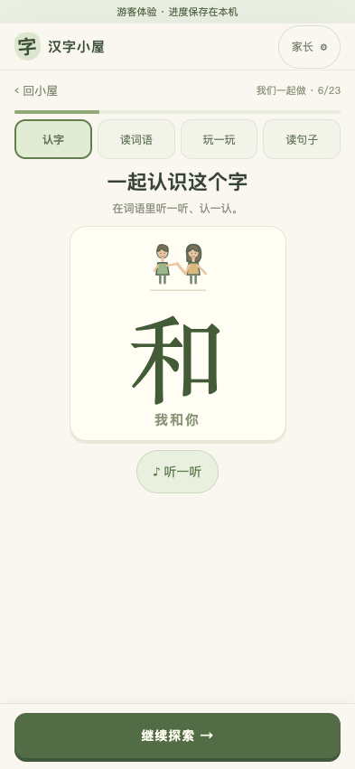
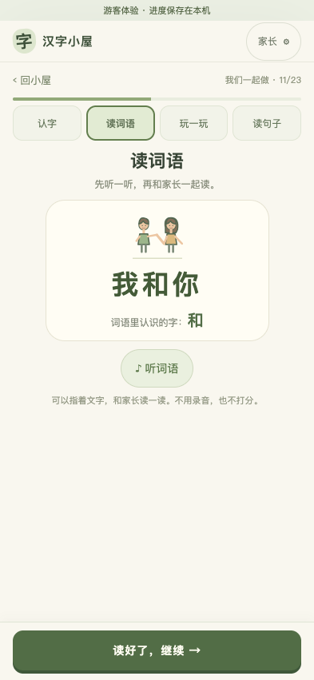
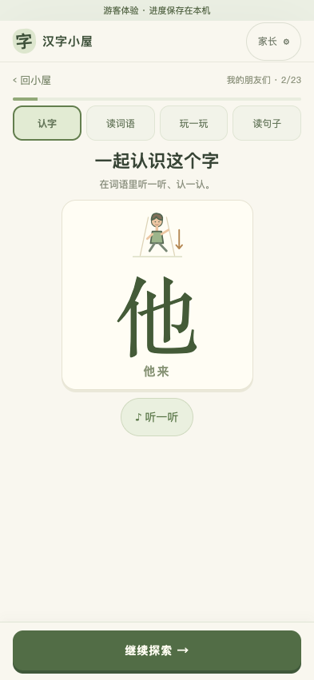
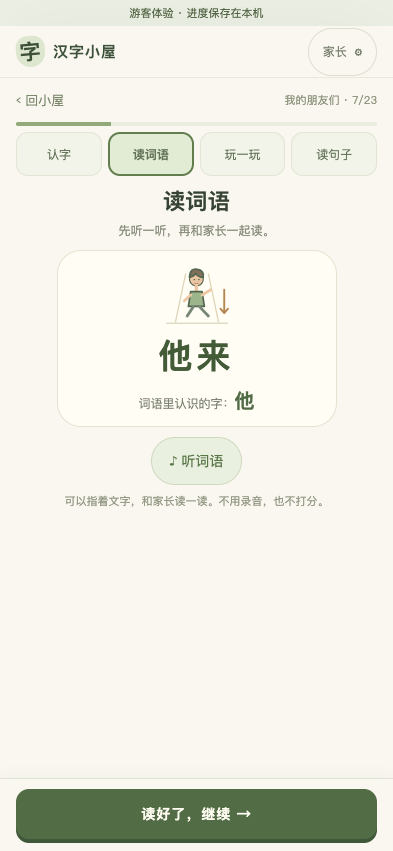
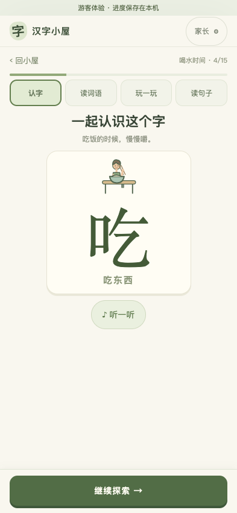
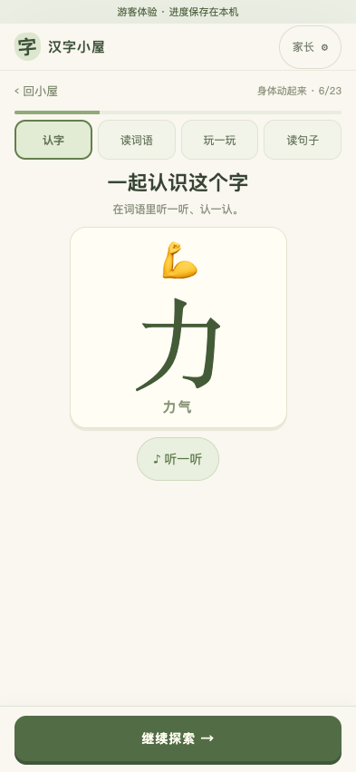
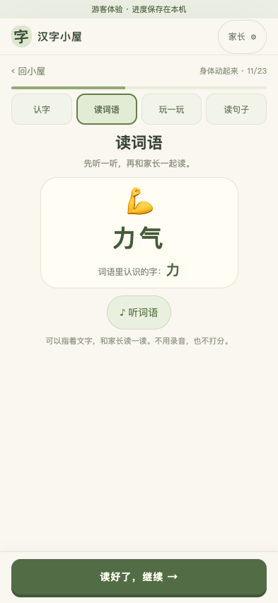
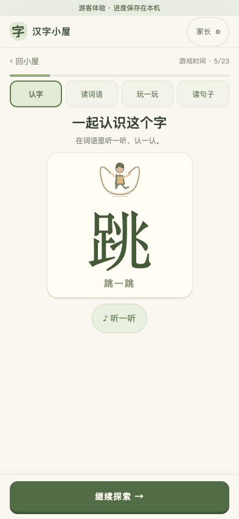
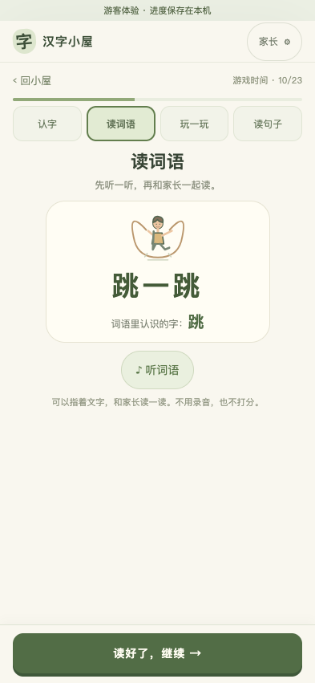
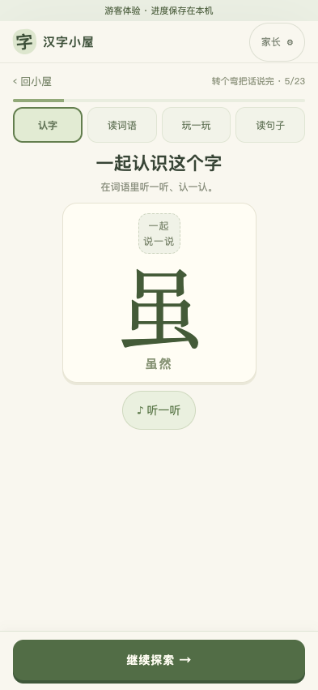
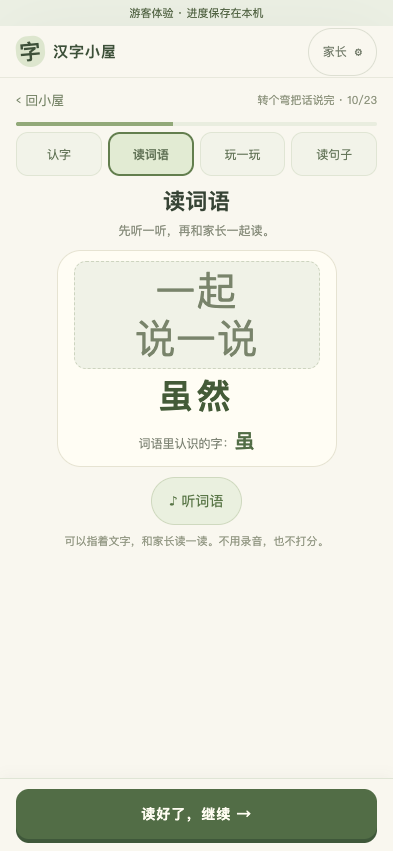
235 幅不同情境服务 342 个词；近义词可共享情境。以下是素材展示，非学习页截图。